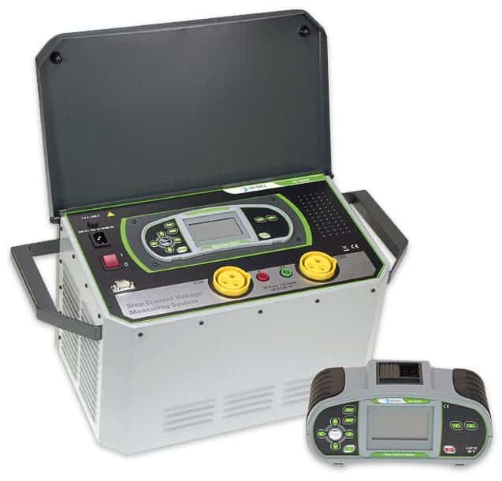

Servicios Especializados
Informe de verificación Inicial
Ensayos completos según normativas SEC
Servicios incluidos:
- ✓ Continuidad de conductores
- ✓ Resistencia de aislamiento
- ✓ Impedancia de bucle de falla
- ✓ Prueba de diferenciales (RCD)
- ✓ Medición de iluminación
Instrumentos:
Metrel 3155
Megger mft-x
Pasa el mouse para ver detalles
Medición y diseño de mallas tierras
Estudios de resistividad y diseño de mallas
Servicios incluidos:
- ✓ Resistencia de mallas tierra
- ✓ Resistividad método Schlumberger
- ✓ Resistividad método Wenner
- ✓ Diseño de mallas tierras
Instrumentos:
AEMC 6471
Megabras mtd
Pasa el mouse para ver detalles
Análisis de redes eléctricas
Hasta 2000A con medición de armónicos
Servicios incluidos:
- ✓ Variables KW, KVAr y KVA
- ✓ Factor de potencia
- ✓ Distorsión armónica
- ✓ Flicker eléctrico
Instrumentos:
AEMC 3945-B
SONEL PQM700
Pasa el mouse para ver detalles
Inspección termográfica
Industrial con múltiples lentes especializados
Servicios incluidos:
- ✓ Equipamiento eléctrico
- ✓ Tableros eléctricos
- ✓ Subestaciones
- ✓ Parques solares
Instrumentos:
HIKMICRO G60
GTC 400C
Pasa el mouse para ver detalles
Pruebas eléctricas generales
Aislación hasta 5KV y vibración industrial
Servicios incluidos:
- ✓ Aislación 2,5-5 KV (DAR-PI)
- ✓ Vibración industrial
- ✓ Niveles de iluminación
- ✓ Armónicos monofásicos
Instrumentos:
UT513A 5KV
FLUKE 805 FC
Pasa el mouse para ver detalles
Pruebas de electromovilidad
Estaciones de carga y funcionalidad
Servicios incluidos:
- ✓ Prueba de impedancia de línea estaciones de carga
- ✓ Prueba de impedancia del circuito de falla
- ✓ Prueba de diferenciales
- ✓ Prueba de aislamiento para estaciones de carga
- ✓ Pruebas de funcionalidad
Instrumentos:
A 1532 XA EVSE
Pasa el mouse para ver detalles
Prueba de interruptores de poder
Configuración y pruebas automáticas
Servicios incluidos:
- ✓ Mostrar la configuración de interruptores
- ✓ Pruebas de funcionamiento en el componente electrónico
- ✓ Pruebas automáticas (verificación de la curva de viaje)
- ✓ Pruebas en la función Zone-Selective Interlocking (ZSI)
- ✓ Pruebas hasta puerto STR53UE
- ✓ Pruebas Micrologic 2.0, 3.0, 5.0, 2.0A, 3.0A, 5.0A, 7.0A, 5.0P, 5.0H, 7.0P, 7.0H, 6.0A, 6.0P, 6.0H
Instrumentos:
Maleta Schneider S33595
Pasa el mouse para ver detalles

Mallas Tierra Alta Tensión y PMGD
Medición alta frecuencia e impedancia de impulso
Servicios incluidos:
- ✓ Medición Malla Tierra Alta Frecuencia (25kH)
- ✓ Prueba de Impedancia de Impulso (10/350)
- ✓ Medición malla tierra en barrido de alta frecuencia
- ✓ Prueba de cable de tierra pilón (PGWT)
Instrumentos:
Metrel 3290 GX
Pasa el mouse para ver detalles
Suministro y Montaje Supresores de Transientes
Trifásicos, monofásicos y control 24 VDC
Servicios incluidos:
- ✓ Suministro y Montaje de Supresores de Transientes Trifásicos
- ✓ Suministro y Montaje de Supresores de Transientes Trifásicos con contador
- ✓ Suministro y Montaje de Supresores de Transientes monofásicos
- ✓ Suministro y Montaje de Supresores de Transientes para control 24 VDC
Pasa el mouse para ver detalles
Prueba de Tensión de Paso y Contacto
Medición y estudio de resistividad alta corriente
Servicios incluidos:
- ✓ Medición de Tensión de Paso
- ✓ Medición de Tensión de Contacto
- ✓ Estudio de resistividad de suelo alta corriente
Instrumentos:
Metrel 3295
Pasa el mouse para ver detalles
Inspección de Calidad Para Plantas Fotovoltaicas
Pruebas I-V e inspección de paneles solares
Servicios incluidos:
- ✓ Pruebas de estado de paneles solares, curva I-V
- ✓ Inspección de paneles solares dañados
- ✓ Verificación de rendimiento de generación por String
- ✓ Inspección visual de riesgos eléctricos general
- ✓ ITO Eléctrico normas SEC
- ✓ ITO Eléctrico normas IEC
Instrumentos:
MI 3108 EurotestPV
HT I-V500w
Pasa el mouse para ver detalles

Inspección por Cámara Acústica Industrial
Detección de descargas parciales y filtraciones
Servicios incluidos:
- ✓ Detección temprana de descarga parciales por efecto corona
- ✓ Mantenimiento preventivo de filtraciones de gas
- ✓ Mantenimiento preventivo de filtraciones de aire comprimido
- ✓ Localización de filtraciones para eficiencia energética de edificios
- ✓ Identificación de vibraciones no deseadas
- ✓ Evaluación de la eficiencia de aislamiento acústico
Instrumentos:
AI56 Acoustic Hikmicro
Pasa el mouse para ver detalles
Pruebas de Integridad de Mallas Tierra
IEEE81 y medición de impedancia alta corriente
Servicios incluidos:
- ✓ Prueba impedancia de bucle y línea alta corriente
- ✓ Prueba integridad mallas tierra IEEE81 10.2-10.3
- ✓ Medición de Impedancia de fuente DC-260V
- ✓ Medición de corrientes de fuga altas corrientes
- ✓ ELR prueba de inyección de corriente IEC 60947-2
- ✓ ELR prueba de tiempo combinada
Instrumentos:
MI 3144 Euro Z 800V
Pasa el mouse para ver detalles
Pruebas de tableros IEC 61439
Rigidez dieléctrica y pruebas funcionales
Servicios incluidos:
- ✓ Pruebas de rigidez dieléctrica 5KV AC
- ✓ Prueba de aislación 1000V DC
- ✓ Prueba de continuidad 25 A
- ✓ Prueba funcional (potencia P/S/Q, tensión, corriente, cos fi, frecuencia, ThdU, ThdI, PF)
- ✓ Prueba de RCD
- ✓ ITO IEC 61439-1 y 2
Instrumentos:
MI 3325 MultiServicerXD
Pasa el mouse para ver detalles